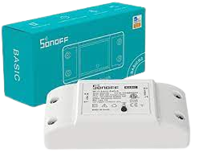
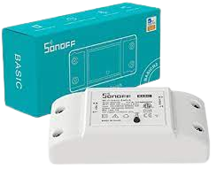

Sonoff Basic R2
Sonoff Basic R2
Sonoff Basic R2
Sonoff Basic R2
Il dispositivo sonoff basic r2 è uno dei tanti dispositivi che puoi collegare all`interno
di una scatola a muro per domotizzare quella luce, interruttore o quel dispositivo. Questo è possibile grazie ad
Amazon Alexa.
 

Esistono anche i Sonoff Dual r3 che sono simili al sonoff basic, ma possono collegare direttamente due dispositivi
insieme, esempio tapparelle dove hai bisogno di due pulsanti per farle scorrere su e giù.